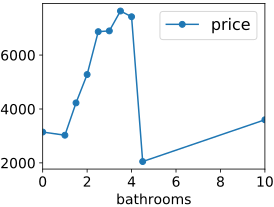
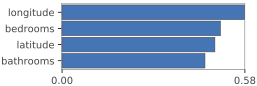
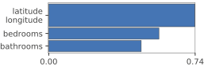
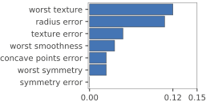
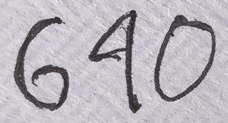
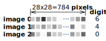
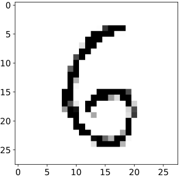
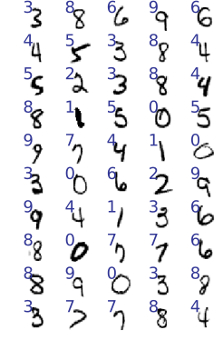
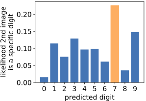
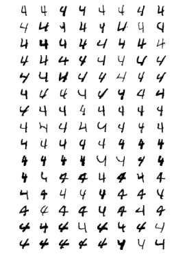

3 A First Taste of Applied Machine Learning
Terence Parr and Jeremy Howard
Copyright © 2018-2019 Terence Parr. All rights reserved.
Please don't replicate on web or redistribute in any way.
This book generated from markup+markdown+python+latex source with Bookish.
You can make comments or annotate this page by going to the annotated version of this page. You'll see existing annotated bits highlighted in yellow. They are PUBLICLY VISIBLE. Or, you can send comments, suggestions, or fixes directly to Terence.
“In God we trust; all others bring data.” — Attributed to W. Edwards Deming and George Box
Let's dig into the actual mechanics of applying machine learning to a few real problems. You might be surprised at how little code it takes! For the Python code snippets in this chapter, feel free to just cut-and-paste them blindly and don't sweat the details. We'll go over the material again in the following chapters. The main take aways are the basic regression and classification modeling process and a rough idea of what machine learning code looks like. Before we get started, let's make sure that we all have the same version of Python 3 and the necessary libraries.
3.1 Computer environment sanity check
Because we assume you know how to program in Python, we assume your machine is set up reasonably to edit and execute Python code. We need to make sure, however, that all of the machine learning libraries you'll need are installed and that Python 3 is the default on your systems. The easiest way is to download and install Anaconda for Python 3.
1During installation on Windows, make sure to check the box that adds Python to your PATH environment variable, for which you will need administrator privileges. Or, just go to the Start menu and execute the Anaconda Prompt.
Download and install the Python 3.6 or higher version of Anaconda using the “64-bit graphical installer.” 1 Use the “just for me” option so that the installer puts Anaconda in your home directory so we all have it in the same spot: C:\Users\YOURID\Anaconda3 on Windows and /Users/YOURID/anaconda3 on Mac (similar on any UNIX machine). The libraries are big and so you'll need 2.4G of disk space. To verify everything is installed properly, you should try to import a library, as Terence demonstrates here on his computer from the Mac (UNIX) command line:
$ which python3
/Users/parrt/anaconda3/bin/python3
$ python3
Python 3.6.5 |Anaconda custom (64-bit)| (default, Apr 26 2018, 08:42:37)
[GCC 4.2.1 Compatible Clang 4.0.1 (tags/RELEASE_401/final)] on darwin
Type "help", "copyright", "credits" or "license" for more information.
>>> import pandas as pd
>>>
On windows, you can start the Python 3 interpreter from the PowerShell (if python is in your PATH) or via the “anaconda prompt” launched from the start menu:
(C:\Users\parrt\Anaconda3) C:\Users\parrt>python
Python 3.6.5 |Anaconda custom (64-bit)| (default, Apr 26 2018, 08:42:37)
[GCC 4.2.1 Compatible Clang 4.0.1 (tags/RELEASE_401/final)] on darwin
Type "help", "copyright", "credits" or "license" for more information.
>>> import pandas as pd
>>>
If you get the >>> prompt back and don't get any errors, you are good to go!
We will also need a package called rfpimp that gives us a reliable way to compare the predictive power of the various apartment features:
$ pip install rfpimp
In the next chapter, Chapter 4 Development Tools, we'll introduce the right development environment, but for now you can use any old Python editing tool.
3.2 Predicting New York City Apartment Rent
As a first example, let's train a random forest model to predict apartment rent prices in New York City. The rent data set is an idealized version of data from a Kaggle competition.
3.2.1 Loading and sniffing the training data
Let's get started by downloading our data set from Kaggle. (You must be a registered Kaggle user and must be logged in.) Go to the Kaggle data page and save train.json into a data directory on your local machine. Then, from the command-line, execute the prep-rent.py script (from this book's data directory) to create the CSV file you'll need:
$ cd data
$ python prep-rent.py
Created rent.csv
Created rent-ideal.csv
Now, we can load the rent-ideal.csv data set with the help of your new BFF (best friend forever) Pandas. Once we import the Pandas library, giving it the standard short alias pd, we can call function read_csv() to open a file of comma-separated value records (one apartment record per line and with a header row with column names):
import pandas as pd # Import the library and give a short alias: pd
rent = pd.read_csv("data/rent-ideal.csv")
The result stored into variable rent is called a data frame and works like a spreadsheet or a database table, with rows and named columns. Here's how to print out the first five records:
print(rent.head(5))
bedrooms bathrooms latitude longitude price
0 3 1.5 40.7145 -73.9425 3000
1 2 1.0 40.7947 -73.9667 5465
2 1 1.0 40.7388 -74.0018 2850
3 1 1.0 40.7539 -73.9677 3275
4 4 1.0 40.8241 -73.9493 3350
You can literally just cut-and-paste those three lines into a Python file and run the file to get that output, assuming you give read_csv() the correct path to the data file. All of the code snippets in this section are pieces of the same large script.
Once we have a data frame, we can ask it all sorts of questions. For example, we can pull out the price column using rent['price'] and then ask for the average (statisticians call the average the mean) rent:
prices = rent['price']
avg_rent = prices.mean()
print(f"Average rent is ${avg_rent:.0f}")
Average rent is $3438
Just like spreadsheet pivot tables or the database group by operator, we can do some pretty fancy data aggregation with Pandas. The following code groups the training data by the number of bathrooms and computes the mean price (actually the mean of all of the other columns too):
bybaths = rent.groupby(['bathrooms']).mean()
bybaths = bybaths.reset_index() # overcome quirk in Pandas
print(bybaths[['bathrooms','price']]) # print just num baths, avg price
bathrooms price
0 0.0 3144.870000
1 1.0 3027.007118
2 1.5 4226.336449
3 2.0 5278.595739
4 2.5 6869.047368
5 3.0 6897.974576
6 3.5 7635.357143
7 4.0 7422.888889
8 4.5 2050.000000
9 10.0 3600.000000
Pandas also has excellent graphing facilities, courtesy of your next best friend, a sophisticated plotting library called matplotlib. Here's how to plot the price against the number of bathrooms:
» Generated by code to left

import matplotlib.pyplot as plt
bybaths.plot.line('bathrooms','price', style='-o')
plt.show()
3.2.2 Training a random forest model
To train a model, we split the data frame into the feature columns (the predictors) and the target (predicted) column, which practitioners typically call variables X and y. Let's train a model using all apartment features to predict rent prices. Here's how to extract the appropriate feature vectors and target column:
X, y = rent[['bedrooms','bathrooms','latitude','longitude']], rent['price']
Variable X is a data frame (list of columns) with the bathrooms column whereas y is the price column (Series in Pandas terminology):
print(type(X), type(y))
<class 'pandas.core.frame.DataFrame'> <class 'pandas.core.series.Series'>
2The surface area of the Python libraries for machine learning is vast and it's difficult to tell where one library stops and the other starts, because they are so intertwined.
The RF implementation we're going to use is from yet another awesome library called scikit-learn, which we'll abbreviate as sklearn.2 In particular, we'll use class RandomForestRegressor. Here is the simple incantation that trains an RF model on our apartment rent data:
from sklearn.ensemble import RandomForestRegressor
rf = RandomForestRegressor(n_estimators=10) # use 10 trees
rf.fit(X, y)
To actually make a prediction, we call predict() with a list of one or more feature vectors. Let's make up an unknown apartment feature vector to make a single rent prediction:
unknown_x = [2, 1, 40.7957, -73.97] # 2 bedrooms, 1 bathroom, ...
Because predict() expects a list of feature vectors, we wrap unknown_x in a list before passing it to predict():
predicted_y = rf.predict([unknown_x])
print(predicted_y)
[4328.39539125]
The predict() function returns a list of predicted rent prices, one per apartment passed in the list of apartments as the X parameter. The model predicts rent of about $4328 given the apartment characteristics in unknown_x.
3.2.3 Does the model capture training data relationships?
Once we've trained a model, we have to test it, just like we do with software before deployment. There are two things to test. First, we verify that the model fits the training data well, meaning that the model captures the relationship in the training data between feature vectors and the targets. Second, we verify that the model generalizes, yielding reasonable rent predictions for feature vectors not in the training set.
To see how well the model fits the training data, we pass the feature vectors of the training data back into the model and compare the predictions to the known actual prices. At this point in our process, we don't care about generality. We're just checking that our model can reproduce the original training data with some degree of accuracy. If the model can't make accurate predictions for apartments it trained on, then there's no hope the model will generalize to previously-unseen apartments.
There are number of common error metrics that practitioners use, but in this case, measuring the average difference between predicted and actual prices is a good metric. In other words, we'll make a prediction for every apartment and subtract that from the actual price found in the training data (and take absolute value). The average of those differences is the mean absolute error, abbreviated MAE, and sklearn provides a ready-made function to compute that. Here's how to run the training data back into the model and print out how far off model is on average (and the percentage of the average that represents):
from sklearn.metrics import mean_absolute_error
predictions = rf.predict(X)
e = mean_absolute_error(y, predictions)
ep = e*100.0/y.mean()
print(f"${e:.0f} average error; {ep:.2f}% error")
$189 average error; 5.50% error
That means a user of this model can expect the predicted price for an apartment in the training data to be off by about $189, which is pretty good! We call this the training error.
They say that three most important property attributes in real estate are: location, location, location. Let's test that hypothesis with our rental data, using just the two columns associated with map location:
X, y = rent[['latitude','longitude']], rent['price']
rf = RandomForestRegressor(n_estimators=100)
rf.fit(X, y)
location_e = mean_absolute_error(y, rf.predict(X))
location_ep = location_e*100.0/y.mean()
print(f"${location_e:.0f} average error; {location_ep:.2f}% error")
$519 average error; 15.09% error
Using just the location, and no information about the number of bedrooms or bathrooms, the average prediction error on the training set is $519. That's more than the error with all features ($189) but is still not bad.
You might compare the difference between the 5.505% error for the model fit on all features and this 15.095% error and think “it's only 9%.” It's better to think of this as the ratio 5.50/15.09 is 36% rather than the difference 5.50-15.09. The ratio indicates that dropping the number of bedrooms and bathrooms from the model reduces prediction accuracy by 36%. This information is extremely useful because it tells us something about the predictive power of those features.
Alas, we shouldn't get too excited by the $189 training error because that just shows our model captures the relationships in the training data. We know nothing about the model's generality.
3.2.4 Checking model generality
The true measure of model quality is its generality: how accurately it predicts prices for apartment feature vectors not found in the training data. Even a crappy model like a dictionary can memorize training data and spit back accurate prices for that same training data. To test for model generality, we need a validation strategy. This is a big, important topic and one that we'll revisit throughout the book. For now, let's look at a common validation strategies called the hold out method.
We were given a single data set: the training data. If we train on that entire data set, how can we measure accuracy on data not in the training set? We don't have any other data to use for validation. The answer is to hold out, say, 20% of the training data, splitting the original data set into two: a smaller training set and a validation set. Validation set is data used only for generality testing of our model, not in training the model. Which 20% to hold out is sometimes nontrivial, but for the apartment data, a random subset is fine.
Sklearn has a built-in function to split data sets, so let's retrain our RF model using 80% of the data and check the average price error using the 20% in the validation set this time:
from sklearn.model_selection import train_test_split
X, y = rent[['bedrooms','bathrooms','latitude','longitude']], rent['price']
# 20% of data goes into test set, 80% into training set
X_train, X_test, y_train, y_test = train_test_split(X, y, test_size=0.2)
rf = RandomForestRegressor(n_estimators=10)
rf.fit(X_train, y_train)
validation_e = mean_absolute_error(y_test, rf.predict(X_test))
print(f"${validation_e:.0f} average error; {validation_e*100.0/y.mean():.2f}% error")
$301 average error; 8.74% error
Comparing the average error $300 from the validation set and the $189 training error, we see that the model performs much better on the training data. This is as we'd expect because the training error is our “do not exceed speed.” (The training error is analogous to the score we'd get on a quiz for which we'd seen the answers beforehand.) We want the validation error to be as close to the training error as possible.
If you run that code multiple times, you'll notice that different runs get different validation errors because of the variability in selecting the validation subset. That's not a good characteristic, but we'll tackle this problem in Chapter 12 Evaluating Regressor Performance using a more stable validation strategy called k-fold cross validation.
3.2.5 Fiddling with model hyper-parameters
Now that we have a metric of model generality, we can use it to tweak model architecture in an effort to improve accuracy. The idea is to wiggle some aspect(s) of the model and see if the validation error goes up or down. For example, the number of trees in our forest affects accuracy and so let's increase the number of trees to 100 from 10:
rf = RandomForestRegressor(n_estimators=100)
rf.fit(X_train, y_train)
e = mean_absolute_error(y_test, rf.predict(X_test))
print(f"${e:.0f} average error; {e*100.0/y.mean():.2f}% error")
$296 average error; 8.62% error
The number of trees, and any other aspect of the model that affects its architecture, statisticians call a hyper-parameter. (I think we programmers would call this a meta-parameter.) The elements inside the model like the trees themselves are called the model parameters. As another example, the four wi weights and minimum rent value from a linear model (that we considererd briefly in Section 2.1.3 Drawing the line) are the model parameters.
At the cost of a little more computing power, the accuracy of our model improves just a little, but every little bit helps.
3.2.6 What the model says about the data
Machine learning models do much more for us than make predictions. Depending on the model, we can learn quite a bit about the data itself. The idea is that models trained on different data sets will have different guts (parameters) inside. Instead of examining those individual parameters, however, we can learn much more by interrogating the model. For example, a key marketing question for real estate agents is “what do people care about in this market?” More generally, we'd like to know which features have the most predictive power.
3The sklearn Random Forest feature importance strategy is sometimes biased, so we use rfpimp. See Beware Default Random Forest Importances for more information.
To compute such feature importance, we can compare the validation errors from a model trained using all features and the same model trained with a single feature removed. This difference tells us something about the relative importance of that missing feature. If the validation error goes way up, we know that feature is important. But if the error stays about the same, we can conclude that feature, in isolation, has very little predictive power. Practitioners do this all the time with RFs, but this querying approach to feature importance applies to any model. (This brute force retraining method works and illustrates the idea, but it's more efficient to randomize a feature's column and retest rather than removing and retraining the model.) Here's how to print out feature importances with a little help from the rfpimp package:3
from rfpimp import *
rf = RandomForestRegressor(n_estimators=100)
rf.fit(X_train, y_train)
I = importances(rf, X_test, y_test)
I
Notice that the RF model is trained using the training set, but the importances are computed using the validation set. Feature importances, therefore, measure the drop in the model's validation set accuracy when each feature is removed (or randomly permuted). It makes sense to examine the predictive power of features in this context because we care most about how well a model generalizes to test vectors outside of the training set.
The actual value of each feature importance indicates the magnitude of its importance to model accuracy but most often we care about the relative differences between the feature importances. It's easier to see their relative strengths if we get fancy and look at the importances visually:
» Generated by code to left

plot_importances(I, color='#4575b4', vscale=1.8)
Using rfpimp, we can even ask it to group latitude and longitude together as a meta-feature when computing feature importances:
» Generated by code to left

I = importances(rf, X_test, y_test,
features=['bedrooms','bathrooms',['latitude','longitude']])
plot_importances(I, color='#4575b4', vscale=1.8)
From this, we can conclude that New Yorkers care the least about bathrooms because that feature has the least predictive power compared to the other features. Together, latitude and longitude have a great deal of predictive power (it's all about the location). Interrogating the model in this way gives us useful information about the New York City rental market, which we can pass on to the consumers of our model.
Often our training data has many more features and we can use a feature importance graph to drop unimportant features. Simpler models are easier to explain to end users and result in faster training times.
Now that we've seen how to train a regression model, let's train a classifier model to see just how similar the process of training and testing is for regressors and classifiers. The only difference is that we use a RandomForestClassifier object instead of a RandomForestRegressor to handle the classifier's binary target variable (rather than the regressor's continuous target value).
3.3 Predicting breast cancer
To build our first classifier, we're going to train a model using the well-known Wisconsin Breast Cancer data set. This is a good introductory data set because it readily surrenders to a number of different machine learning models, including RFs. There are 569 observations (patients) in the breast cancer data set and each observation has 30 numeric predictive features. The target variable (diagnosis) is a binary variable that indicates malignant (uh oh) or benign (yay!). The features describe the shape, size, and other characteristics of cell nuclei in digitized images; there are no missing feature values, which we'll learn how to deal with in Chapter 5 Exploring and Denoising Your Data Set.
Sklearn has a convenient function called load_breast_cancer(), so let's get started by populating a data frame:
from sklearn.datasets import load_breast_cancer
import pandas as pd
cancer = load_breast_cancer()
X = cancer.data
y = cancer.target
df = pd.DataFrame(X, columns=cancer.feature_names)
Many of the cell nuclei features are redundant in the sense that they measure the same or almost the same thing. For example, if we know the radius of the circle, we also know the perimeter, so features such as mean radius and mean perimeter are likely to be very similar variables. Features that are not independent are said to be collinear and, in practice, features are rarely completely independent. Chapter 15 Understanding the Relationship Between Variables considers the collinearity of this breast-cancer data set and shows how to pick the most important features. Using the analysis in that chapter, let's restrict ourselves to 7 key features (out of 30) for simplicity reasons and display some of the data to get a sense of what it looks like:
features = ['radius error', 'texture error', 'concave points error',
'symmetry error', 'worst texture', 'worst smoothness',
'worst symmetry']
df = df[features] # select just these features
print("target[0:30] =", y[0:30]) # show 30 values of malignant/benign target
df.head()
target[0:30] = [0 0 0 0 0 0 0 0 0 0 0 0 0 0 0 0 0 0 0 1 1 1 0 0 0 0 0 0 0 0]
Just as we did with rent price prediction, we need to split our data set into training and validation sets (using 15% not 20% for validation as the data set is very small):
from sklearn.model_selection import train_test_split
X_train, X_test, y_train, y_test = train_test_split(df, y, test_size=0.15)
Then, we're ready to train and test our classifier:
from sklearn.ensemble import RandomForestClassifier
cl = RandomForestClassifier(n_estimators=300)
cl.fit(X_train, y_train)
validation_e = cl.score(X_test, y_test)
print(f"{validation_e*100:.2f}% correct")
95.35% correct
For classifiers, the score() function returns the simplest metric for correctness (accuracy), which measures how many the model predicted correctly out of 569 observations divided by 569. Testing classifiers is usually a lot more involved than testing regressors, as we'll see in Chapter 13 Evaluating classifier performance, but accuracy is fine for now. Given that we are only using 7 features, the 95.349% accuracy is very good. Using all 30 features, we see an average validation accuracy of about 96%, but the validation accuracy fluctuates a lot because of the randomness inherent in splitting the data set into training and validation sets, not to mention the randomness used during RF construction.
We can compute feature importances for classifiers just as we did for regressors. (In fact we can compute feature importances for any model.) In this case, we see that radius error is the most important feature for distinguishing between malignant versus benign masses based upon these 7 features.
» Generated by code to left

from rfpimp import *
I = importances(cl, X_test, y_test)
plot_importances(I, color='#4575b4', vscale=1.4)
Such feature importance graphs suggest which cell characteristics pathologist should focus on.
At this point, we've trained both a regressor and a classifier on structured data. Structured data is what we normally see in spreadsheets or database tables. Unstructured data sets, on the other hand, contain things like images, documents, and tweets. Because this book focuses on RF models applied to structured data, we won't do much with unstructured data. (As a general rule, we recommend neural networks for unstructured data.) That said, it's possible to apply RFs to many unstructured data problems, such as optical character recognition, which we'll do in the next section. It gives us an opportunity to internalize some important concepts about the applicability of models, while exploring a fun application of machine learning.
3.4 Classifying handwritten digits

Figure 3.1. Letter carrier misinterpreted 640 as 690
The other day, Terence received a letter in the US Mail addressed to number 640, though he lives at 690, because the letter carrier (understandably) misclassified the digit “4” as a “9” (see Figure 3.1). Let's see if we can train a model to recognize digits more accurately than the letter carrier.
To train the model we need some sample images of handwritten digits labeled properly with known digit values, which we can find in the well-known MNIST data set. Our strategy will be to train a RF classifier using the pixels of an image as features and known digit labels as targets values. Then we'll ask the model to classify the images of the 6-4-0 digits scanned from the address written on the envelope. The model's prediction results are surprising at first glance but, on closer inspection of the training data, teaches us an important lesson about the expected behavior of machine learning models. Next, we'll compare the performance of the RF to another kind of model then finish up by compressing the images and re-comparing the performance of the models.
3.4.1 Representing and loading image data
The full data set has 60,000 images, but we extracted 10,000 images, converted them to comma-separated values (CSV) from binary, and compressed them into mnist-10k-sample.csv.zip for use with this example. You can download and unzip that file into your data directory. Also grab 640.csv, which contains the image data of the three 6-4-0 digits in the same format as the MNIST data set.
Figure 3.2. Digits 6-4-0 scanned and scaled to 28x28 pixel images
Let's start by loading the 6-4-0 digits as 28x28 pixel images (Figure 3.2) into a data frame and see what we've got:
import pandas as pd
addr640 = pd.read_csv("data/640.csv")

Figure 3.3. Images from 640.csv as data frame
Each row contains the complete set of pixels for a single image and, as the last column, the known digit value (0..9). (See Figure 3.3.) Let's print the digit column values using addr640.digit then drop it as we know the digits are 6-4-0:
print(addr640.digit.values)
addr640 = addr640.drop('digit', axis=1) # drop digit column
[6 4 0]
Each pixel is a floating-point value between 0 and 1 that represents the pixel intensity (greyscale), where 0 means white and 1 means black. For example, a blank image would be all zeros and an image someone scribbled all over would be mostly dark values close to 1. Images are 28 x 28 pixels and so each row in the data frame has 784 columns of pixels as well as the known digit value column. The pixels of the visual rows of an image get concatenated together or “flattened” to form a single long row of numbers in the data set.
Because there are so many numbers, looking at the pixel values in the data frame is not as easy as just printing the data frame. It's better to reverse the flattening by reshaping the 784-element one-dimensional pixel array into a 28 x 28 two-dimensional array and then ask matplotlib to show the 2D array as an image:
» Generated by code to left

six_img_as_row = addr640.iloc[0].values # digit '6' is first row
img28x28 = six_img_as_row.reshape(28,28) # unflatten as 2D array
plt.imshow(img28x28, cmap='binary')
plt.show()
Another way to visualize the data representing a digit's image is to print out the pixel values, 28 lines of 28 values per line. To reduce the size of the print out, let's flip any value greater than 0 to be 1 and pixel values to integers. Then, we can just print the 2D matrix:
six_img_as_row[six_img_as_row>0] = 1 # convert 0..1 to 0 or 1
six_img_as_row = six_img_as_row.astype(int)
img28x28 = six_img_as_row.reshape(28,28)
s = str(img28x28).replace(' ','') # remove spaces
print(s)
[[0000000000000000000000000000]
[0000000000000000000000000000]
[0000000000000000000000000000]
[0000000000000000000000000000]
[0000000000000011111000000000]
[0000000000000111101000000000]
[0000000000001110000000000000]
[0000000000011100000000000000]
[0000000000011000000000000000]
[0000000000110000000000000000]
[0000000000100000000000000000]
[0000000001100000000000000000]
[0000000001100000000000000000]
[0000000001100000000000000000]
[0000000001100000000000000000]
[0000000011000011111100000000]
[0000000011000111111100000000]
[0000000011101100000110000000]
[0000000011101000000110000000]
[0000000001100100000110000000]
[0000000000100000000100000000]
[0000000000110000000100000000]
[0000000000011000001100000000]
[0000000000000111111100000000]
[0000000000000111111000000000]
[0000000000000000000000000000]
[0000000000000000000000000000]
[0000000000000000000000000000]]
And, voila, the pattern of 0's and 1's visually forms a 6 digit! We'll dig deeper into such useful data manipulations in Section 4.2 Dataframe Dojo.
Now, let's load our training data into a data frame, just like we did for our 6-4-0 test images:
digits = pd.read_csv("data/mnist-10k-sample.csv")
images = digits.drop('digit', axis=1) # get just pixels
targets = digits['digit'] # get just digit value
Using the matplotlib imshow() function repeatedly, we can get a grid of images taken from the training data frame and annotate them with their true digit value. Here's how to plot the first 50 images in a 10x5 grid:
» Generated by code to left

fig, axes = plt.subplots(10, 5, figsize=(4, 6.5)) # make 10x5 grid of plots
for i, ax in enumerate(axes.flat):
img_as_row = images.iloc[i].values
img28x28 = img_as_row.reshape(28,28)
ax.axis('off') # don't show x, y axes
ax.imshow(img28x28, cmap='binary')
ax.text(0, 8, targets[i], color='#313695', fontsize=18)
plt.show()
You can play around with the subplots grid to plot more images to get a feel for the training set. See Section 4.3 Generating plots with matplotlib to learn the basics of the matplotlib graphics library.
3.4.2 Classifying test digits 6-4-0
4We chose hyper-parameter n_estimators=900 trees in our RF because we found, through experimentation, that fewer trees resulted in less consistent and accurate predictions.
Now that we have a suitable training set of handwritten digits and their true digit values in images and targets, let's train an RF classifier and see what it predicts for the 6-4-0 images:4
from sklearn.ensemble import RandomForestClassifier
cl = RandomForestClassifier(n_estimators=900, n_jobs=-1)
cl.fit(images, targets)
pred = cl.predict(addr640)
print(pred)
[6 7 0]
The model predicts that the first digit is 6, the second is 7, and the third is 0. The letter carrier, the model, and we agree on the 6 and 0, but we all disagree on the second digit. The letter carrier thought it was 9, the model thinks it's a 7, but we think that the second digit is actually a 4. To our human eye, the second digit in Figure 3.2 is clearly not a 7. Something strange is going on, so let's investigate. First, let's see how confident the model is in its 7 prediction using predict_proba() rather than just predict():
import numpy as np;
np.set_printoptions(precision=3)
digit_values = range(10)
prob = cl.predict_proba(addr640)
prob_for_2nd_digit = prob[1]
print(prob_for_2nd_digit)
[0.016 0.114 0.076 0.129 0.097 0.099 0.061 0.226 0.036 0.148]
Function predict_proba() returns a probability for each possible target class, digits 0-9 in this case. The probability in position 7 (indexed from 0) is the highest, which is why the model predicts 7:
pred_digit = np.argmax(prob_for_2nd_digit)
print("predicted digit is", pred_digit)
predicted digit is 7
It's easier to compare the different probabilities visually, so let's generate bar graphs showing the prediction probabilities for each test image. Here's the code to show one of the bar graphs, that for the second test digit:
» Generated by code to left

pred_digit = np.argmax(prob_for_2nd_digit)
bars = plt.bar(digit_values, prob_for_2nd_digit, color='#4575b4')
bars[pred_digit].set_color('#fdae61')
plt.xlabel("predicted digit")
plt.xticks(digit_values)
plt.ylabel("likelihood 2nd image\nis a specific digit")
plt.show()
The model predicts digit 7 for the second test digit by a wide margin. It does not consider digit 4 to be a likely choice at all. That prediction is concerning because it does not match our expectations. From a human perspective, the second digit is 4 or 9, definitely not a 7.
Debugging machine learning code is often very challenging because so many issues can manifest themselves as poor models. There could be a bug in our code, we could have chosen an inappropriate model, we might not have enough data, the data might be noisy, and so on. We can assume that the MNIST training data set is okay and that 10,000 images is enough training data. The code to train and test the model is tiny so that's unlikely the problem.
When confronted with misbehaving code, experienced programmers know that, because nothing mysterious is going on, the program is doing exactly what we told it to do. In a data science context, this principle might be: the model is making predictions based solely on the experience (training data) we gave it. That's a big hint that we should take another look at the data, this time focusing on just the images known to be 4's. The following code isolates the images for 4's and displays the first 15*8=120 images in a grid.
» Generated by code to left

fours = images[targets==4] # find all "4" images
fig, axes = plt.subplots(15, 8, figsize=(4,6.5))
for i, ax in enumerate(axes.flat):
img = fours.iloc[i,:].values.reshape(28,28)
ax.axis('off')
ax.imshow(img, cmap='binary')
If we compare those images with the 4 digit from the envelope in Figure 3.2, it's clear that none of the training images look like our 4 test image. A few of the images have a triangular top like the test image, but the horizontal lines in training images cross the vertical lines whereas the horizontal line in the test image terminates at the vertical line. Given the “experience” provided to the model, it's easy to see why it does not predict digit 4.
This brings us to an important lesson that's worth emphasizing: models can only make predictions based upon the training data provided to them. They don't necessarily have the same experience we do, so we have to match our prediction expectations to the training data when judging a model. Or, we can remedy the situation by providing a more extensive training set.
The lesson applies to regressors, not just classifiers. Imagine you're a real estate agent and that every two-bedroom one-bath apartment you've ever seen is about $4,000/month. Given that experience, clients should expect you to predict $4,000 when asked about the rent for an unknown two-bedroom one-bath apartment. In other words, machine learning models do the best they can, given the constraints placed on them by the training data, even if the model's predictions are wildly different than our expectations.
In the end, our machine learning model did no better than the letter carrier; it just predicted a digit that a human would be less likely to pick. It would be interesting to measure the accuracy of the model in general, rather than on a single test case, so let's do that next.
3.4.3 Comparing the digit classifier's performance to a linear model
As we did with the breast cancer data, let's split (80/20) the MNIST data into training and validation sets, train an RF classifier, and measure the overall accuracy:
X_train, X_test, y_train, y_test = \
train_test_split(images, targets, test_size=.2)
cl = RandomForestClassifier(n_estimators=900, n_jobs=-1)
cl.fit(X_train, y_train)
rfaccur = cl.score(X_test, y_test)
print(rfaccur)
0.953
An accuracy of 95.300% sounds pretty good, and it could be entirely satisfactory from a business point of view for many applications. But, it's still a good idea to compare the RF's performance to that of another model as a gauge of quality. Practitioners commonly use a linear model as a lower bound benchmark and sklearn provides a linear classifier model called LogisticRegression:
from sklearn.linear_model import LogisticRegression
# create linear model
lm = LogisticRegression(solver='newton-cg', multi_class='multinomial')
lm.fit(X_train, y_train)
lmaccur = lm.score(X_test, y_test)
print(lmaccur)
0.916
While the linear model's accuracy of 91.600% is less than the RF's 95.300%, it is not too bad considering the difficulty of this image classification problem. Because RFs are generally more powerful than linear models, we'd expect the RF to perform better on average. If, on the other hand, a linear model trained on the same data performs better, that could indicate a bug or other problem with our RF.
While we won't study them in this book, linear models are useful to know about for three other reasons. First, linear models compress the entire image training set down to a small collection of floating-point coefficients (on the order of 784 for 784 features). Model size might be important if the model must run on, say, a microcontroller in an autonomous vehicle. In contrast to the small footprint of the linear model, our RF has 900 large trees. Here's how to sum up the number of nodes across all trees (estimators):
ntrees = cl.n_estimators
nnodes = sum([cl.estimators_[i].tree_.node_count for i in range(ntrees)])
print(f"{nnodes:,}") # print with commas
1,691,022
That's a lot of tree nodes, so the RF requires a lot more memory than the linear model.

Figure 3.4. Linear regression model versus random forest trained on linear relationship
Second, linear models can be useful when we know there is a linear relationship between features and the target variable. For example, given the number sequence 1, 2, 3, 4, 5 all of us would predict 6 as the 6th value. (That data follows the linear relationship described by line y=x.) An RF, in contrast, would predict roughly 4.5, as shown in Figure 3.4. This behavior highlights that there is at least one data set that is better served by a linear model than an RF. An advantage of RFs is that they don't need to make assumptions about the kind of relationship between features and target variables, unlike linear models. On the other hand, that means RF models don't extrapolate well beyond the range of their experience. In practice, the relationship between features and target variable is rarely a simple linear relationship and, in fact, we usually have no idea what the relationship is. That is one reason we recommend using RFs (because they don't require knowledge of the underlying feature-target relationship).
5The notation to get 1..5 into a column matrix and a vector is a bit awkward because NumPy is designed to be convenient for more complicated data sets than these single-feature training sets and single-record test vectors.
For completeness, though, let's run through the code for the 1..5 sequence to see how the two models behave. Here's how to get the sequence 1..5 into some training vectors and a test element:5
import numpy as np
X_train = np.array([1,2,3,4,5]).reshape(5,1) # 5 rows of 1 column
y_train = np.array([1,2,3,4,5]) # 1 column
X_test = np.array([6]).reshape(1,1) # 1 row of 1 column
Then, let's train a linear regression model and predict a y target value for x=6:
from sklearn.linear_model import LinearRegression
lm = LinearRegression()
lm.fit(X_train,y_train)
print("y =", lm.predict(X_test))
y = [6.]
A prediction of 6 is what we would expect because our human eye clearly sees the linear relationship. Let's see what the RF model predicts:
from sklearn.ensemble import RandomForestRegressor
rf = RandomForestRegressor(n_estimators=100)
rf.fit(X_train,y_train)
print("y =", rf.predict(X_test) )
y = [4.49]
RF models are doing a kind of “average of the nearest neighbor” prediction. Here, the nearest neighbors are 4 and 5, which the RF averages to get its prediction. In this case, the linear model makes more sense but remember the poor linear fit we saw in Figure 2.1 on some real data.
The third reason to know about linear models is that logistic regression is the basic building block of neural networks. Logistic regression is equivalent to a neural network of limited depth (just input and output layers), while more accurate neural networks have many so-called hidden layers between the input and output layers. The best neural network based classifiers achieve accuracies above 99% but transform the pixels into higher-level features and use a 50,000 image training set. (See the MNIST database page for more performance scores.)
There are a number of important lessons here. Different models can perform differently on the same data set, and a linear model is a good lower bound benchmark. Comparing an RF with a linear model gives us an idea of the difficulty of the problem and could identify problems with our RF model. RFs perform very well in general and do not make assumptions about the underlying feature-target relationship, unlike linear models, but have difficulty extrapolating beyond the training feature ranges. Different models also have different memory footprints and this must be weighed against model strength, according to your project requirements.
3.5 Summary
In this chapter, we built and tested both regressor and classifier models, which are really just two sides of the same coin. Regressors learn the relationship between features and numeric target variables whereas classifiers learn the relationship between features and a set of target classes or categories. (One way to think about classifiers is that classifiers are regressors that predict the probability of being in a particular target class.) Thanks to the uniformity of sklearn API, we can abstract from this chapter's examples a basic code sequence for training any model:
df = pd.read_csv(datafile) # load dataframe
X = df[[feature column names of interest]]
y = df[target column name]
m = ChooseYourModel(hyper-parameters)
m.fit(X,y)
We'll primarily be using RandomForestRegressor and RandomForestClassifier in the ChooseYourModel slot. The hyper-parameters of a model represent the key structural or mathematical arguments, such as the number of trees in a random forest or the number of neuron layers in a neural network. Using hyper-parameters n_estimators=100 to get 100 RF trees is a good default. For performance reasons, it's also a good idea to use n_jobs=-1, which says to use as many processor core as possible in parallel while training the RF.
To make a prediction using model m for some test record, call method predict():
y_pred = m.predict(test record) # make predictions
For basic testing purposes, we split the data set into 80% training and 20% validation sets (the hold out method):
X_train, X_test, y_train, y_test = train_test_split(X, y, test_size=0.2)
Determining a good validation set is sometimes not as simple as taking a 20% random sample, as we'll see in Chapter 12 Evaluating Regressor Performance and [chp:bulldozer-testing], but that method is okay for now.
Computing a validation score for any sklearn model is as simple as:
s = m.score(X_test, y_test) # measure performance
Method score() returns accuracy (in range 0-1) for classifiers and a common metric called R^2 (“R squared”) for regressors. measures how well a regressor performs compared to a trivial model that always returns the average of the target (such as apartment price) for any prediction. 1.0 is a perfect score, 0 means the model does no better than predicting the average, and a value < 0 indicates the model is worse than just predicting the average. (We'll learn more about in the next chapter.) Of course, we can also compute other metrics that are more meaningful to end-users when necessary, such as the mean absolute error we computed for apartment prices.
As you can see from this simple recipe, the actual task of training and testing a model is straightforward, once you have appropriate training and testing data. Most of the work building a model involves data collection, data cleaning, filling in missing values, feature engineering, and proper test set identification. Furthermore, all features fed to a model must be numeric, rather than strings like names or categorical variables like low/medium/high, so we have some data conversions to do. Much of this book is devoted to preparing data so that this code recipe applies.
Even with perfect training data, remember that a model can only make predictions based on the training data we provide. Models don't necessarily have the same experience we do, and certainly don't have a human's modeling power. Some models will perform better than others on the same data set, but we recommend sticking with a random forest (regressor or classifier) then comparing it to a linear model to get a sense of the RF's performance. In the end, as long as you pick a decent model like random forest, building an accurate machine learning model is more about making sure you have strongly predictive features. Also keep in mind that models are not black boxes. We can interrogate them to extract useful information, such as feature importances. More on this in Chapter 14 Interpreting Model Prediction Results and Chapter 15 Understanding the Relationship Between Variables.
{kind=link}
{kind=link}
{kind=link}
{kind=link}
{kind=link}
{kind=link}
{kind=link}
{kind=link}
{kind=link}
{kind=link}